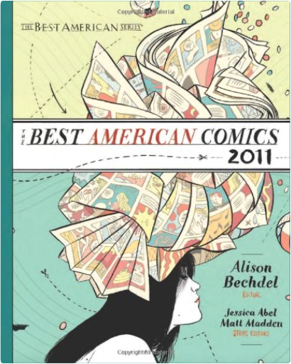
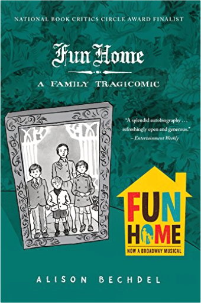
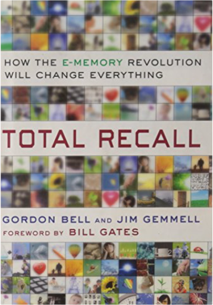
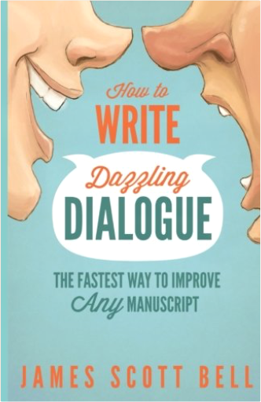
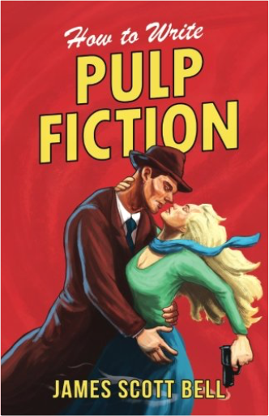
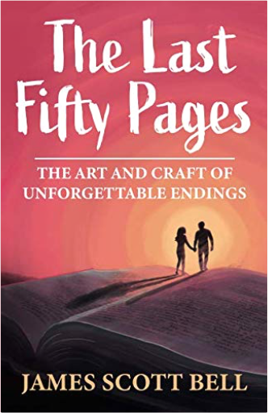
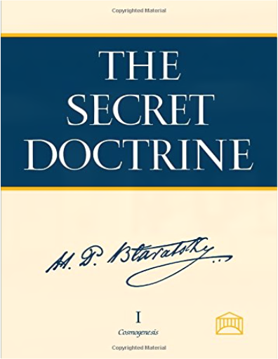
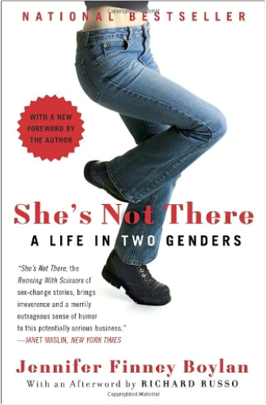
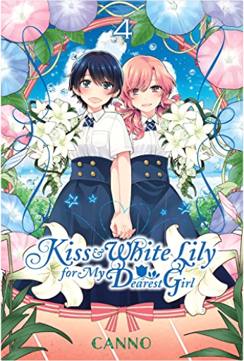

 The Best American Comics 2011Alison Bechdel, Jessica Abel, Matt Madden “If you have spent a long time resisting the status quo—whether it’s in art, society, or the political world—what happens when that status quo at last gives way?
A universe of possibility opens up.”
—Alison Bechdel, from the Introduction
Featuring: Gabrielle Bell, Joe Sacco, Dash Shaw, Sabrina Jones, Chris Ware, Jillian Tamaki, Jaime Hernandez, Jeff Smith, Paul Pope, Kevin Huizenga, and others  Fun Home: A Family TragicomicAlison Bechdel A fresh and brilliantly told memoir from a cult favorite comic artist, marked by gothic twists, a family funeral home, sexual angst, and great books.
This breakout book by Alison Bechdel is a darkly funny family tale, pitch-perfectly illustrated with Bechdel's sweetly gothic drawings. Like Marjane Satrapi's Persepolis, it's a story exhilaratingly suited to graphic memoir form.
Meet Alison's father, a historic preservation expert and obsessive restorer of the family's Victorian home, a third-generation funeral home director, a high school English teacher, an icily distant parent, and a closeted homosexual who, as it turns out, is involved with his male students and a family babysitter. Through narrative that is alternately heartbreaking and fiercely funny, we are drawn into a daughter's complex yearning for her father. And yet, apart from assigned stints dusting caskets at the family-owned "fun home," as Alison and her brothers call it, the relationship achieves its most intimate expression through the shared code of books. When Alison comes out as homosexual herself in late adolescense, the denouement is swift, graphic — and redemptive.  Total Recall: How the E-Memory Revolution Will Change EverythingGordon Bell, Jim Gemmell THE TOTAL RECALL REVOLUTION IS INEVITABLE.
IT WILL CHANGE WHAT IT MEANS TO BE HUMAN.
IT HAS ALREADY BEGUN.
What if you could remember everything? Gordon Bell and Jim Gemmell draw on their experience from their MyLifeBits project at Microsoft Research to explain the benefits to come from an earth-shaking and inevitable increase in electronic memories. In 1998 they began using Bell, a luminary in the computer world, as a test case, attempting to digitally record as much of his life as possible. Photos, letters, and memorabilia were scanned. Everything he did on his computer was captured. He wore an automatic camera, an arm-strap that logged his bio-metrics, and began recording telephone calls. This experiment, and the system they created to support it, put them at the center of a movement studying the creation and enjoyment of e-memories.
Since then the three streams of technology feeding the Total Recall revolution—digital recording, digital storage, and digital search, have become gushing torrents. We are capturing so much of our lives now, be it on the date- and location-stamped photos we take with our smart phones or in the continuous records we have of our emails, instant messages, and tweets—not to mention the GPS tracking of our movements many cars and smart phones already do automatically. We are storing what we capture either out there in the “cloud” of services such as Facebook or on our very own increasingly massive and cheap hard drives. But the critical technology, and perhaps least understood, is our magical new ability to find the information we want in the mountain of data that is our past. And not just Google it, but data mine it so that, say, we can chart how much exercise we have been doing in the last four weeks in comparison with what we did four years ago. In health, education, work life, and our personal lives, the Total Recall revolution is going to change everything. As Bell and Gemmell show, it has already begun.
Total Recall provides a glimpse of the near future. Imagine heart monitors woven into your clothes and tiny wearable audio and visual recorders automatically capturing what you see and hear. Imagine being able to summon up the e-memories of your great grandfather and his avatar giving you advice about whether or not to go to college, accept that job offer, or get married. The range of potential insights is truly awesome. But Bell and Gemmell also show how you can begin to take better advantage of this new technology right now. From how to navigate the serious question of privacy and serious problem of application compatibility to what kind of startups Bell is willing to invest in and which scanner he prefers, this is a book about a turning point in human knowledge as well as an immediate practical guide.
Total Recall is a technological revolution that will accomplish nothing less than a transformation in the way humans think about the meaning of their lives.
Watch a Video  How to Write Dazzling Dialogue: The Fastest Way to Improve Any ManuscriptJames Scott Bell There is one sure-fire way of improving your novel fast. . . You may know the fundamentals of how to write fiction. You may be more than competent in plot, structure and characters. But if your dialogue is dull it will drag the whole story down. On the other hand, if your dialogue is crisp and full of tension it immediately grabs the reader. And if that reader is an agent or editor, sharp dialogue will give them instant assurance that you know what you're doing as a writer. Writing a bestseller or hot screenplay is no easy task, but dazzling dialogue is an absolute essential if you want to get there. The best part is, the skills of the dialogue craft are easy to understand and put into practice. #1 bestselling writing coach James Scott Bell has put together and expanded upon the dialogue lectures from his popular writing seminars. In How to Write Dazzling Dialogue you'll learn:What fictional dialogue is ... and isn'tThe 11 secrets of crafting memorable dialogueThe 5 essential tasks of dialogue5 ways to improve your dialogue ear4 can't-miss methods to increase conflict and tension in any dialogue exchangeThe top 10 dialogue issues, and how to resolve themYou'll also see dazzling dialogue in action with examples from hit novels and screenplays. Don't sabotage your chances of selling your work to readers or publishers because the dialogue is unexceptional. Dazzle them with what the characters say. How to Write Dazzling Dialogue will give you the tools to do it.  How to Write Pulp FictionJames Scott Bell Type Hard. Type Fast. Make Dough.That was the formula of old-school pulp fiction—plot-driven, popular and gobbled up by a reading public hungry for more.
And it produced many writers who hammered out a living selling "cash-and-carry" stories and novels. Some of these writers were among the best America has ever produced. Writers like Raymond Chandler, Dashiell Hammett and John D. MacDonald. Others are numbered among the bestselling authors of all time, including Erle Stanley Gardner, Lester Dent, and Frederick Faust (better known by his pen name, Max Brand).
What were the secrets of these successful pulp writers? And how can any writer, of any genre, use them to produce fiction that sells?
How to Write Pulp Fiction will teach you:
* how to be more prolific
* the secrets of pulp plotting
* how to elevate your pulp prose
* the fiction "formulas" of some of the best pulp writers of all time
* the bestselling genres
* how to harness the power of the series character
* the most effective publishing strategies
* how to market your pulp fiction
Added bonus! The Start-A-Plot Machine, a brainstorming partner that will help you instantly generate a story or novel idea. You'll never again wonder what to write next.
There has never been a better time to be a writer. By tapping into the vibe of the pulp writers of old, and making use of the tools of publication available now, any hard-working writer has a serious shot at realizing steady income from their fiction.
"James Scott Bell is my go-to writing guru!" - Terri Blackstock, New York Times bestselling writer  The Last Fifty Pages: The Art and Craft of Unforgettable EndingsJames Scott Bell “The first page of a book sells that book. The last page sells your next book.” –– Mickey Spillane
What are the secrets for writing a great ending for your novel? How do you leave readers so satisfied that they'll want another book by you—right now? What tools and techniques can shape your last fifty pages into a powerful, unforgettable experience?
In this book, International Thriller Writers Award winner and #1 bestselling writing teacher James Scott Bell reveals:
• The five types of endings.
• What needs to happen in Act 3.
• How to use the Ah and Uh-Oh emotional wallops.
• A simple technique for crafting twist endings.
• The most important secret of all—resonance.
• The Stew, Brew, Accrue, Do brainstorming method.
• The best way to tie up loose ends.
• The most common ending mistakes, and how to avoid them.
And more. Read this book and you will come away with a thorough knowledge of why great endings work and how to create them for every novel you write. 13 Steps to Evil: How to Craft Superbad VillainsSacha Black Your hero is not the most important character in your book. Your villain is.
Are you fed up of drowning in two-dimensional villains? Frustrated with creating clichés? And failing to get your reader to root for your villain?
In 13 Steps to Evil, you’ll discover:
+ How to develop a villain’s mindset
+ A step-by-step guide to creating your villain from the ground up
+ Why getting to the core of a villain’s personality is essential to make them credible
+ What pitfalls and clichés to avoid as well as the tropes your story needs
Finally, there is a comprehensive writing guide to help you create superbad villains. Whether you’re just starting out or are a seasoned writer, this book will help power up your bad guy and give them that extra edge.
These lessons will help you master and control your villainous minions, navigate and gain the perfect balance of good and evil, as well as strengthening your villain to give your story the tension and punch it needs.
If you like dark humor, learning through examples and want to create the best villains you can, then you’ll love Sacha Black’s guide to crafting superbad villains. Read 13 Steps to Evil today and start creating kick-ass villains. |  The Secret Doctrine: The Synthesis of Science, Religion, and PhilosophyHelena Petrovna Blavatsky Continuously in print for over 100 years, the SD remains today the most comprehensive sourcebook of the esoteric tradition, outlining the fundamental tenets of the Secret Doctrine of the Archaic Ages. Challenging, prophetic, and strikingly modern, it directly addresses the perennial questions: continuity of life after death, purpose of existence, good and evil, consciousness and substance, sexuality, karma, evolution, and human and planetary transformation. Based on the ancient Stanzas of Dzyan with corroborating testimony from over 1,200 sources, these volumes unfold the drama of cosmic and human evolution — from the reawakening of the gods after a Night of the Universe to the ultimate reunion of cosmos with its divine source. Supplementary sections discuss relevant scientific issues as well as the mystery language of myths, symbols, and allegories, helping the reader decipher the often abstruse imagery of the world's sacred literature.  She's Not There: A Life in Two GendersJennifer Finney Boylan The provocative bestseller She’s Not There is the winning, utterly surprising story of a person changing genders. By turns hilarious and deeply moving, Jennifer Finney Boylan explores the territory that lies between men and women, examines changing friendships, and rejoices in the redeeming power of family. Told in Boylan’s fresh voice, She’s Not There is about a person bearing and finally revealing a complex secret. As James evolves into Jennifer in scenes that are by turns tender, startling, and witty, a marvelously human perspective emerges on issues of love, sex, and the fascinating relationship between our physical and intuitive selves. Now with a new epilogue from the author and an afterword from Deirdre "Grace" Boylan, She’s Not There shines a light on the often confounding process of accepting ourselves. A Chosen Faith: An Introduction to Unitarian UniversalismJohn Buehrens, Forrest Church For those contemplating religious choices, Unitarian Universalism offers an appealing alternative to religious denominations that stress theological creeds over individual conviction and belief. In this new edition of the classic introductory text on Unitarian Universalism, which includes a revealing, entertaining foreword by best-selling author Robert Fulghum (All I Really Need to Know I Learned in Kindergarten, It Was on Fire When I Lay Down on It), a new preface by UU moderator Denise Davidoff, and two new chapters by the authors, John Buehrens and Forrest Church explore the many sources of the living tradition of their chosen faith. Kiss and White Lily for My Dearest Girl, Vol. 1Canno Two girls, a new school, and the beginning of a beautiful friendship.
In middle school, Ayaka Shiramine was the perfect student: hard-working, with excellent grades and a great personality to match. As Ayaka enters high school she expects to still be on top, but one thing she didn't account for is her new classmate, the lazy yet genuine genius Yurine Kurosawa. What's in store for Ayaka and Yurine as they go through high school...together? Kiss and White Lily for My Dearest Girl, Vol. 2Canno Ai Uehara and Chiharu Kusakabe's beloved senior Hoshino-senpai is graduating. She wants to study science at a school far away, but that means Ai and Chiharu won't see her anymore. Ai struggles with the reality of senpai leaving, while Chiharu battles with her own unrequited feelings When a bold underclassman interlopes, though, things might take an unexpected turn...  Kiss and White Lily for My Dearest Girl, Vol. 4Canno (Volume 3)
Ayaka Shiramine and Yurine Kurosawa have started a new year at school as second years and are classmates once again. Yurine is practically assaulting the gardening club so she can join. Meanwhile the rest club struggles valiantly to ensure the survival of the rose garden. Amidst this, they meet Yukina Ooshiro and Towako Mita. The story of kissing girls continues—! |


 Made with Delicious Library
Made with Delicious Library